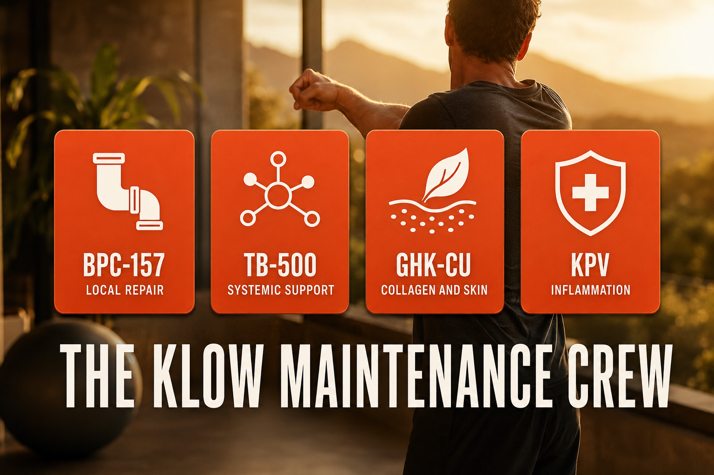

What KLOW Is And How People Commonly Think About It
KLOW is a proprietary four-peptide research blend containing BPC-157 (10mg), TB-500 (10mg), GHK-Cu (50mg), and KPV (10mg) per 80mg vial. Each component addresses a different aspect of tissue repair, cellular regeneration, and inflammation management. Together they form what many practitioners consider the most comprehensive recovery blend available in the research peptide market.
The name KLOW refers to the combination of the four components. It is not a pharmaceutical product and has no approved clinical applications. It is sold exclusively as a research chemical.
Imagine your body is a building. Not the fancy parts, just the pipes, wiring, walls, and foundation. The stuff that keeps everything running. Most of the time you do not think about it. But when something breaks, a leaky pipe, a cracked wall, a short circuit, everything in the building is affected until it gets fixed. Your connective tissue, joints, tendons, gut lining, and skin are your building's infrastructure. They take constant low-grade damage from exercise, stress, aging, and just being alive. Most of the time your body patches things up. But in your 40s, the repair crew gets slower. Small leaks that used to fix overnight start taking a week. Old damage that was never fully addressed starts to compound. KLOW is four compounds working as a maintenance crew, each with a different specialty. BPC-157 is the plumber. It works at the specific problem site, a joint, a tendon, the gut lining. It brings blood flow to the area and starts rebuilding. TB-500 is the general contractor. It moves through the whole building looking for anything that needs attention, not just the obvious spots. It helps cells migrate to where repair is needed. GHK-Cu is the interior finisher. Once the structural work is done, GHK-Cu rebuilds the surfaces, collagen, elastin, skin, hair follicles. The stuff you actually see and feel. KPV is the building manager who keeps everyone from overreacting. Inflammation is your body's alarm system, useful when real damage occurs, destructive when it runs non-stop. KPV quiets the alarm when it is no longer needed. Together they keep the infrastructure from falling behind. That post-basketball soreness that used to last four days? That is a maintenance backlog. KLOW is the crew that starts catching up.

How It Works
BPC-157 (Body Protection Compound) works at the local tissue level, promoting new blood vessel formation (angiogenesis), stimulating tendon and ligament fibroblast growth, and supporting gut lining integrity.
TB-500 (Thymosin Beta-4 fragment) works systemically, promoting cell migration throughout the body and supporting broad tissue repair dynamics.
GHK-Cu (Copper Peptide) stimulates collagen and elastin production, supports skin regeneration, activates anti-inflammatory pathways, and promotes hair follicle activity.
KPV is a tripeptide with anti-inflammatory properties, particularly studied for gut and mucosal tissue.
DOSING PROTOCOL: | Protocol | Units daily | Total blend | Purpose | |---|---|---|---| | Maintenance | 5 units | 1.33mg | General wellness, longevity | | Standard | 10 units | 2.67mg | Balanced repair and anti-inflammatory | | Active repair | 15 units | 4.0mg | Injury recovery, active inflammation | | Aggressive | 20 units | 5.33mg | Serious injury, faster healing goal |
RECONSTITUTION STANDARD: KLOW0 (80mg vial) + 3ml BAC water = 26.7mg/ml total blend 10 units = 267mcg total blend (167mcg GHK-Cu + 33mcg each of BPC-157, TB-500, KPV)
DOSING LOGIC EXPLAINED: 5 units daily, maintenance dose for someone who feels well but wants continuous anti-inflammatory and collagen support. This is where many people settle after an injury has healed.
10 units daily, standard therapeutic dose. Enough of each component to produce measurable tissue repair and anti-inflammatory effects. The starting recommendation for most people.
15 units daily, for people actively dealing with injury, joint pain, or significant inflammation. Appropriate when 10 units is producing some but not enough effect.
20 units daily, aggressive repair protocol. Most appropriate when significant injury has occurred, torn tissue, post-surgery recovery, serious inflammatory flare. Once the injury resolves, titrating back to 10 then 5 units is recommended.
DOES KLOW NEED TO BE CYCLED? The 6-8 week cycling recommendation is based on conservative caution rather than specific evidence of receptor desensitization for any of the four components. GHK-Cu can be used continuously with no documented sensitivity development. BPC-157 and KPV have short half lives (4 hours and 2-4 hours respectively) making continuous daily dosing appropriate. TB-500 has a longer half life (3-5 days) and accumulates with daily dosing. No component has documented evidence requiring mandatory rest periods. Continuous daily dosing at 5-10 units is reasonable based on current community data.
HALF LIVES: BPC-157: \~4 hours TB-500: \~3-5 days GHK-Cu: \~30 minutes KPV: \~2-4 hours
The short half lives of BPC-157, GHK-Cu, and KPV mean daily dosing is necessary for continuous effect. Taking KLOW every other day would create gaps where three of the four components drop near zero.
STABILITY: Reconstituted KLOW is stable for 14-28 days refrigerated, shorter than single-compound vials due to the copper content of GHK-Cu. Label with mix date and use-by date. Do not use beyond 28 days.
Documented Benefits
- Tendon and ligament repair
- Joint inflammation reduction
- Post-exercise recovery acceleration
- Gut lining repair and integrity support
- Collagen and elastin stimulation (skin, hair, nails)
- Hair follicle activation
- Wound healing acceleration
- Systemic anti-inflammatory support
- Mucosal tissue protection (relevant for Hashimoto's gut-thyroid connection) COMMON MISTAKES:
- Using reconstituted vial beyond 28 days, shorter stability window than most peptides due to GHK-Cu copper content
- Injecting too quickly at higher doses, slow consistent injection reduces local irritation
- Expecting immediate dramatic pain relief, BPC-157 and TB-500 take 2-4 weeks to show meaningful tissue repair effects
- Skipping doses, the short half lives of three components mean gaps create real breaks in therapeutic effect
- Not increasing to 15-20 units when actively injured, standard 10 unit dose may be insufficient for acute injury CONTRAINDICATIONS:
- No specific contraindications documented for any component at standard doses
- Caution with active cancer, BPC-157 promotes angiogenesis (new blood vessel formation) which theoretically could support tumor vascularization
- History of cancer, discuss with oncologist before use
- Colon polyps or family history of colorectal cancer, colonoscopy clearance recommended before starting
- Copper sensitivity, GHK-Cu contains copper; rare sensitivity possible WHAT TO TRACK:
- Joint discomfort (subjective 1-10 weekly, note specific joints)
- Post-exercise recovery time (hours/days to return to baseline)
- Skin texture and firmness (subjective monthly assessment)
- Hair density and shedding (subjective monthly)
- Gut comfort and digestion (subjective, especially relevant for Hashimoto's)
- Wound healing speed if applicable STACKS WELL WITH:
- Retatrutide, RETA reduces systemic inflammation; KLOW addresses local tissue repair
- MOTS-c, cellular energy support complements tissue repair
- Ipamorelin/CJC-1295, growth hormone support enhances tissue repair capacity PROTOCOL CHECKLIST (SIDEBAR): ☐ Confirm vial: KLOW0 (80mg) ☐ Reconstitute: add 3ml BAC water ☐ Concentration: 26.7mg/ml total blend ☐ Standard dose: 10 units daily ☐ Inject subcutaneously, abdomen or near area of concern ☐ Administer daily, short half lives require consistent dosing ☐ Label vial: use within 14-28 days of mixing ☐ Refrigerate immediately ☐ Assess at 4 weeks, increase to 15 units if insufficient effect
Dosing Protocol
| Protocol | Units daily | Total blend | Purpose |
|---|---|---|---|
| Maintenance | 5 units | 1.33mg | General wellness, longevity |
| Standard | 10 units | 2.67mg | Balanced repair and anti-inflammatory |
| Active repair | 15 units | 4.0mg | Injury recovery, active inflammation |
| Aggressive | 20 units | 5.33mg | Serious injury, faster healing goal |
How To Reconstitute KLOW
KLOW0 (80mg vial) + 3ml BAC water
3ml BAC water
26.7mg/ml total blend 10 units
| Your Dose | Units To Draw | Volume |
|---|---|---|
| 5 units (starting) | 1.33mg | |
| 10 units (standard) | 2.67mg | |
| 15 units (advanced) | 4.0mg |
5 units daily, maintenance dose for someone who feels well but wants continuous anti-inflammatory and collagen support. This is where many people settle after an injury has healed. 10 units daily, standard therapeutic dose. Enough of each component to produce measurable tissue repair and anti-inflammatory effects. The starting recommendation for most people. 15 units daily, for people actively dealing with injury, joint pain, or significant inflammation. Appropriate when 10 units is producing some but not enough effect. 20 units daily, aggressive repair protocol. Most appropriate when significant injury has occurred, torn tissue, post-surgery recovery, serious inflammatory flare. Once the injury resolves, titrating back to 10 then 5 units is recommended. DOES KLOW NEED TO BE CYCLED? The 6-8 week cycling recommendation is based on conservative caution rather than specific evidence of receptor desensitization for any of the four components. GHK-Cu can be used continuously with no documented sensitivity development. BPC-157 and KPV have short half lives (4 hours and 2-4 hours respectively) making continuous daily dosing appropriate. TB-500 has a longer half life (3-5 days) and accumulates with daily dosing. No component has documented evidence requiring mandatory rest periods. Continuous daily dosing at 5-10 units is reasonable based on current community data.
BPC-157: \~4 hours TB-500: \~3-5 days GHK-Cu: \~30 minutes KPV: \~2-4 hours The short half lives of BPC-157, GHK-Cu, and KPV mean daily dosing is necessary for continuous effect. Taking KLOW every other day would create gaps where three of the four components drop near zero. STABILITY: Reconstituted KLOW is stable for 14-28 days refrigerated, shorter than single-compound vials due to the copper content of GHK-Cu. Label with mix date and use-by date. Do not use beyond 28 days. DOCUMENTED BENEFITS: - Tendon and ligament repair - Joint inflammation reduction - Post-exercise recovery acceleration - Gut lining repair and integrity support - Collagen and elastin stimulation (skin, hair, nails) - Hair follicle activation - Wound healing acceleration - Systemic anti-inflammatory support - Mucosal tissue protection (relevant for Hashimoto's gut-thyroid connection)
Dosage Build-Up Timeline
Most people start low enough to understand how the peptide feels before increasing the dose. Increase only after the current dose feels predictable, comfortable, and sustainable.
Common Mistakes
shorter stability window than most peptides due to GHK-Cu copper content
slow consistent injection reduces local irritation
BPC-157 and TB-500 take 2-4 weeks to show meaningful tissue repair effects
the short half lives of three components mean gaps create real breaks in therapeutic effect
standard 10 unit dose may be insufficient for acute injury
Contraindications And Cautions
No specific contraindications documented for any component at standard doses
BPC-157 promotes angiogenesis (new blood vessel formation) which theoretically could support tumor vascularization
discuss with oncologist before use
colonoscopy clearance recommended before starting
GHK-Cu contains copper; rare sensitivity possible
What To Track
- Joint discomfort (subjective 1-10 weekly, note specific joints)
- Post-exercise recovery time (hours/days to return to baseline)
- Skin texture and firmness (subjective monthly assessment)
- Hair density and shedding (subjective monthly)
- Gut comfort and digestion (subjective, especially relevant for Hashimoto's)
- Wound healing speed if applicable